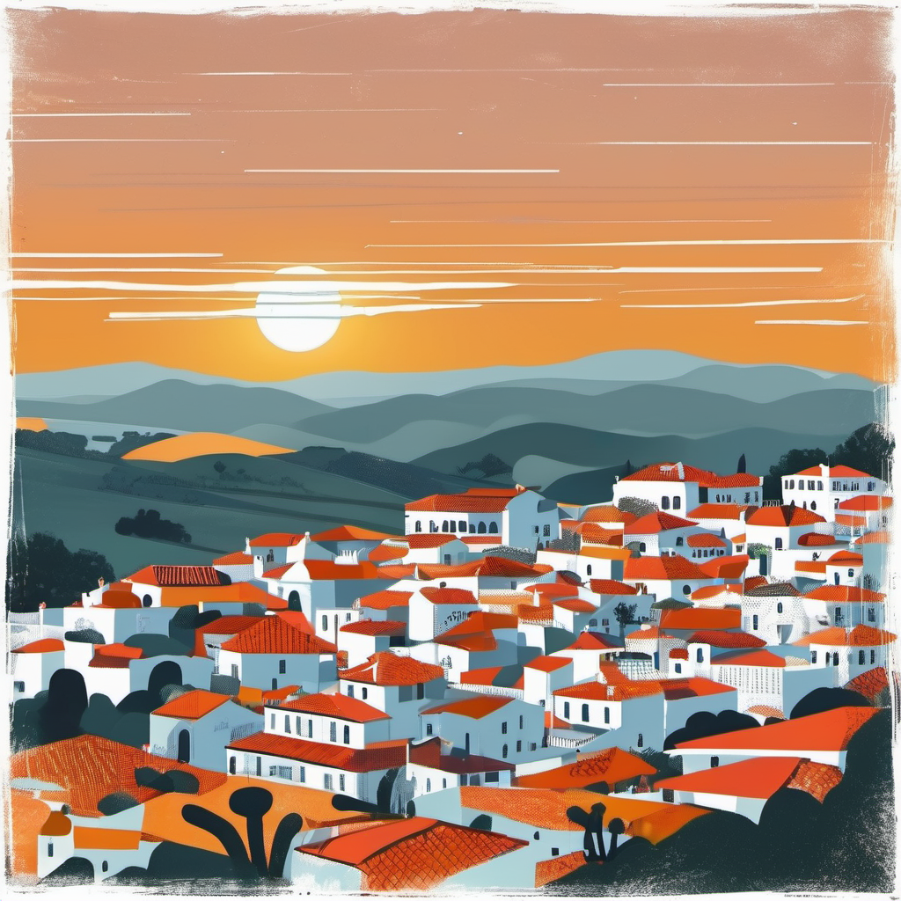
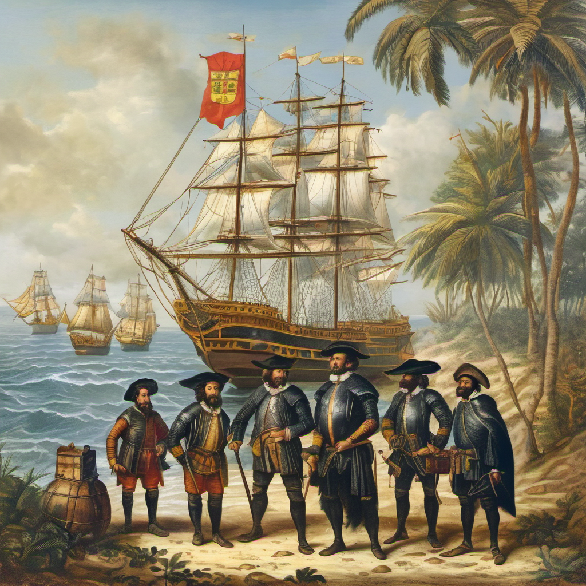

Portugália egy lenyűgöző európai ország, mely a kontinens nyugati részén található.
Az Atlanti-óceán partján elterülő vidék, nem csak kulturális gazdagságával,
hanem gyönyörű tájaival is lenyűgözi az odalátogatókat. Nem csoda, hogy az ország fő bevételi forrása
már évek óta a turizmus.

Történelem és kultúra
Portugália mély történelemmel büszkélkedik, mely egészen az ókortól napjainkig terjed.
A latin eredetű nyelvű ország a híres portugál felfedezéseknek is otthont adott, mint például Vasco da Gama és Ferdinand Magellan expedíciói.
A történelem és a felfedezők kultúrájának nyomai még ma is fellelhetők a városokban és múzeumokban.

Színes porto-i házak
Éghajlat és táj
Az ország éghajlata különféle északi és déli részein eltérő lehet.
Az északi részen nedvesebb, zöld tájak találhatók, míg a déli rész mediterrán éghajlatával és
csodálatos tengerpartjaival hívogatja a látogatókat.
A Douro-völgy híres szőlőültetvényeiről és a vidéki területekről származó gyönyörű tájról ismert.
A Köppen-Geiger osztályozáson mediterrán, az északi partvidéken annak hűvös nyarú változatával találkozunk,
az ország nagyobb részén azonban a meleg vagy forró
nyarú változat alakult ki. Az éves középhőmérséklet északon 15 °C, a déli partvidéken azonban már 18 °C.
Városok
Portugália számos festői várossal büszkélkedhet. Lisszabon,
a főváros, az Arany Porta szépségével, a szűk sikátorokkal, és a híres eléggel, a Rossio-val kápráztatja el a látogatókat.
Porto, a második legnagyobb város, a Douro-folyó partján fekszik, és híres a portói borkóstolókról.
A Douro-folyó partján elterülő város híres a portói borról, a lenyűgöző történelmi negyedéről és a karakteres, színes házairól.
A Dom Luís I híd a város egyik ikonja, és Porto a Douro-völgy szőlőültetvényeinek kapujaként is ismert.